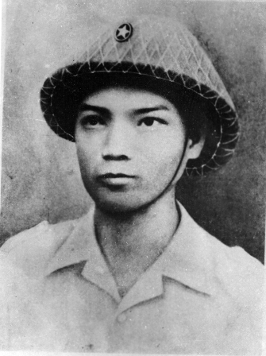
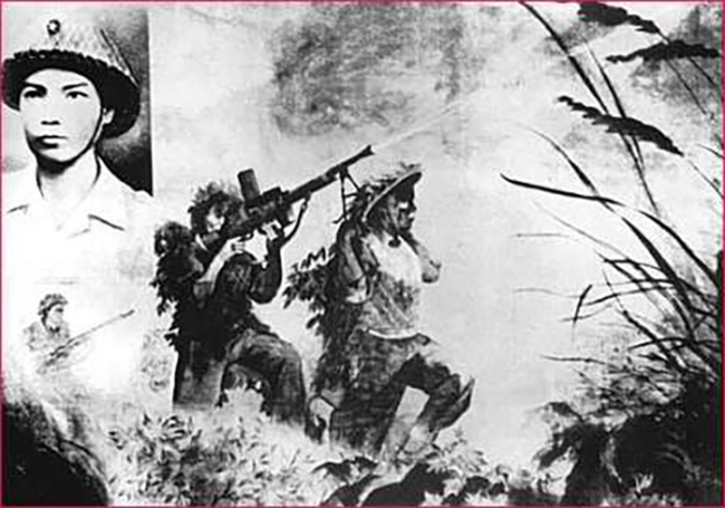

Bế Văn Đàn (1931 – 1954) là người dân tộc Tày, quê ở xã Quang Vinh, huyện Phục Hòa, tỉnh Cao Bằng. Anh sinh ra trong một gia đình nghèo có truyền thống cách mạng. Cha anh làm thợ mỏ, mẹ mất sớm, chú hoạt động cách mạng bị giặc Pháp bắt và giết hại, bản thân anh phải đi ở cho địa chủ từ nhỏ. Sau 5 năm đi ở, anh trốn về sống với dì và tham gia du kích.
Tháng 1-1949, Bế Văn Đàn xung phong vào bộ đội, tham gia nhiều chiến dịch. Trong mỗi chiến dịch, anh luôn nêu cao tinh thần dũng cảm, vượt qua mọi khó khăn, gian khổ, ác liệt, kiên quyết chấp hành mệnh lệnh nghiêm túc, chính xác và kịp thời.

Cuộc kháng chiến chống thực dân Pháp của quân dân ta lúc bấy giờ đang ở giai đoạn quyết liệt. Trong Chiến cuộc Đông Xuân 1953 – 1954, Bế Văn Đàn được phân công làm liên lạc tiểu đoàn. Một đại đội của tiểu đoàn được giao nhiệm vụ bao vây ngăn quân Pháp ở Mường Pồn. Khi thấy lực lượng Việt Minh ít, quân Pháp tập trung hai đại đội có phi pháo yểm trợ liên tiếp phản kích, nhưng cả hai lần đều bị quân ta đánh bại. Cuộc chiến đấu diễn ra căng thẳng, quyết liệt.
Nhận lệnh giữ Mường Pồn bằng mọi giá để tạo điều kiện cho các đơn vị khác triển khai lực lượng, Bế Văn Đàn dù vừa đi công tác về vẫn xung phong làm nhiệm vụ. Anh dũng cảm vượt qua lưới đạn dày đặc để truyền đạt mệnh lệnh: “Bằng mọi giá phải giữ chân địch để đơn vị lớn triển khai lực lượng được kịp thời chu đáo.” Trận chiến càng trở nên ác liệt, anh nhận lệnh ở lại chiến đấu cùng đồng đội.
Trong lần phản kích thứ ba, đại đội quân ta thương vong nặng, chỉ còn 17 người. Bản thân Bế Văn Đàn cũng bị thương nhưng vẫn tiếp tục chiến đấu. Một khẩu trung liên bị vô hiệu vì xạ thủ hy sinh, còn khẩu trung liên của Chu Văn Pù không có chỗ đặt súng.

Trong tình thế cấp bách, Bế Văn Đàn không ngần ngại chạy lại, cầm hai chân khẩu trung liên đặt lên vai mình và hô đồng đội: “Kẻ thù trước mặt, bắn chết chúng nó đi, trả thù cho đồng đội!” Nhờ vậy, đồng đội đã bắn hạ hàng chục tên, khiến địch hoảng sợ bỏ chạy, đợt phản kích bị bẻ gãy.
Trong khi đứng làm giá súng, Bế Văn Đàn bị thêm hai vết thương và anh đã anh dũng hy sinh khi hai tay còn ghì chặt chân súng trên vai. Tấm gương hy sinh quả cảm của anh đã cổ vũ tinh thần chiến đấu của toàn mặt trận, góp phần làm nên chiến thắng Điện Biên Phủ “lừng lẫy năm châu, chấn động địa cầu”.
Anh chỉ biết có dây thép gai đồn giặc
Tôi yêu những con người chưa hình dung ra hạnh phúc,
Lúc đồng đội cần dẫu chết không từ nan”
— Chế Lan Viên
Hình ảnh Bế Văn Đàn lấy thân mình làm giá súng trở thành một trong những tấm gương tiêu biểu trong Quân đội nhân dân Việt Nam. Tại đại hội mừng công của đơn vị, anh được truy tặng Huân chương Chiến công hạng Nhất và bình chọn là Chiến sĩ thi đua số 1 của tiểu đoàn. Ngày 31-8-1955, Bế Văn Đàn được truy tặng danh hiệu Anh hùng Lực lượng vũ trang nhân dân và Huân chương Quân công hạng Nhì.
Tháng 5-1959, hài cốt của anh được di chuyển từ Mường Pồn về Nghĩa trang Liệt sĩ A1 – nghĩa trang cấp quốc gia của tỉnh Điện Biên. Ngày nay, tên anh được đặt cho nhiều con phố và trường học trên cả nước. Di tích Mường Pồn, nơi anh hy sinh, đã trở thành “địa chỉ đỏ” giáo dục truyền thống yêu nước và tinh thần chiến đấu quả cảm cho các thế hệ sau.